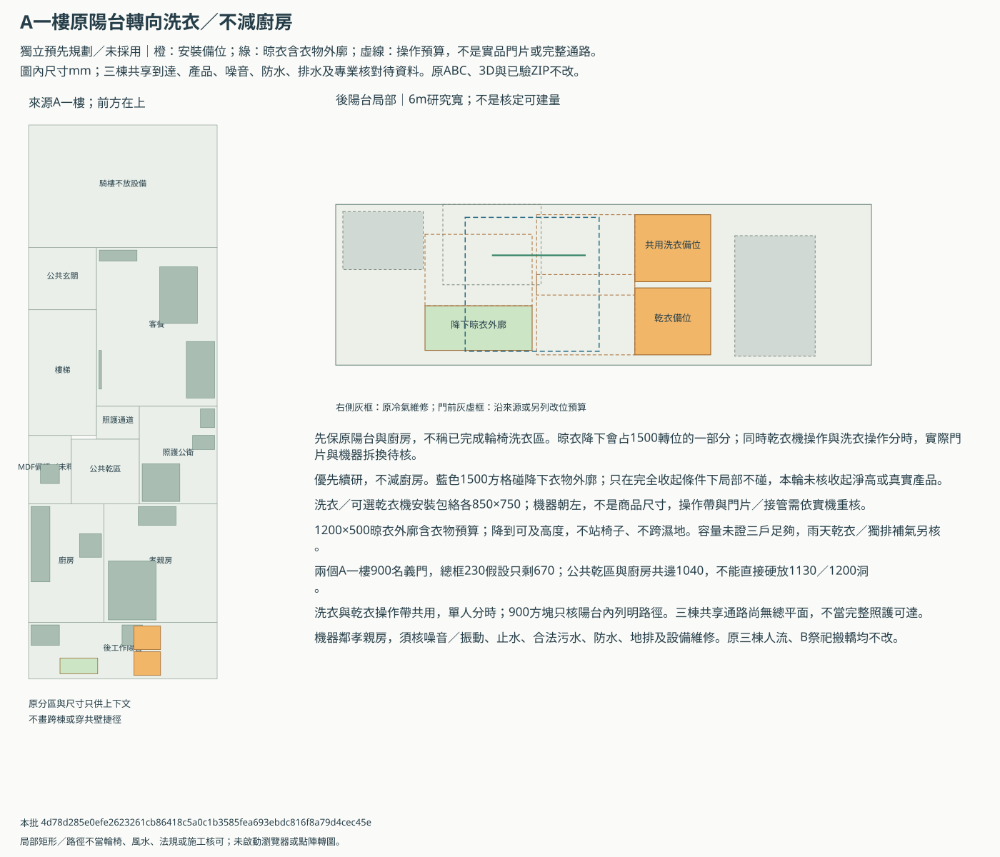
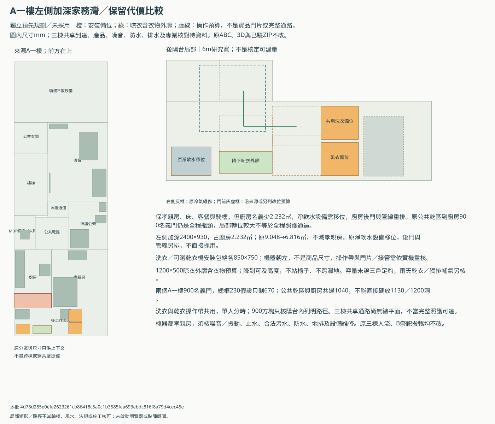
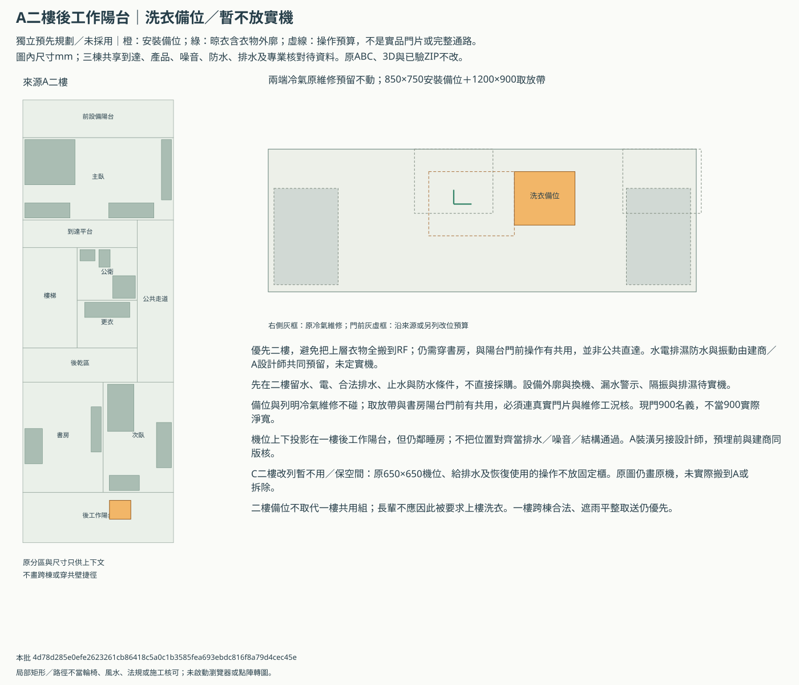

三棟一樓共用洗衣／晾衣與A上層備位
最新方向：一樓共用一組；C二樓先暫不用、保空間，A二樓以上另留機位。獨立預先規劃，未選A為正式共用位置、未採用或核准施工；原3D與已驗收檔不改。
優先深化A一樓原後陽台轉向洗衣：既有機位改為共用、平放乾衣機只留位，晾衣降到可及高度。先不減廚房；需要不與晾衣共用的1500轉位時，再比較左側加深灣及其2.232㎡廚房代價。三棟總平面與實際門組未到，還不能把A位置定成全體長輩自行可達的共用區。
先比三棟哪裡適合
| 棟別 | 研究順位 | 依據 | 限制 |
|---|---|---|---|
| A | first-local-study-conditional-on-common-access | 既有6×1.8m後工作陽台、洗衣與給水設備，可先研究原占地轉向；不必動祭祀、C照護浴室或客餐。 | 目前需經廚房；兩個900名義洞及跨棟遮雨通路未核，靠孝親房需核噪音振動。 |
| B | retain-source-not-first-shared-hub | 後門版已有家務、1200小晾架及原洗衣機，前門版乾衣仍不足。 | 共享人流／濕衣不宜經祭祀與搬轎，香火氣味、乾背保護及排濕須分開；不把後巷當三棟已連通。 |
| C | not-in-current-830mm-rear-strip | 現一樓後檢修帶深830mm，孝親與浴室不能借用作公用洗衣通路。 | 新安裝預留寬750加操作900及兩側115，共1880mm，比830多1050；強塞會改照護／後濕區，暫不推薦。 |
A一樓兩版與A二樓備位
先研究保廚房版；加深灣只保代價比較，不替屋主選縮廚房。橙色是安裝包絡／備位，不是已安裝商品。
A一樓原陽台轉向洗衣／不減廚房
先保原陽台與廚房，不稱已完成輪椅洗衣區。晾衣降下會占1500轉位的一部分；同時乾衣機操作與洗衣操作分時，實際門片與機器拆換待核。


A一樓左側加深家務灣／保留代價比較
保孝親房、床、客餐與騎樓，但廚房名義少2.232㎡，淨軟水設備需移位，廚房後門與管線重排。原公共乾區到廚房900名義門仍是全程瓶頸，局部轉位較大不等於全程照護通過。


A二樓後工作陽台洗衣備位
優先二樓，避免把上層衣物全搬到RF；仍需穿書房，與陽台門前操作有共用，並非公共直達。水電排濕防水與振動由建商／A設計師共同預留，未定實機。


門與全程到達的缺口
| 門 | 名義mm | 扣總框230假設mm | 900目標缺mm | 實際產品 |
|---|---|---|---|---|
| A1-public-to-kitchen | 900 | 670 | 230 | 未知 |
| A1-kitchen-to-balcony | 900 | 670 | 230 | 未知 |
| A2-study-to-balcony | 900 | 670 | 230 | 未知 |
A公共乾區與廚房只接1040名義邊，不能直接在原邊硬畫1130／1200洞；若要實際900淨寬，需連分區、門組與MDF維修另排。
三棟共用怎麼取送
- 只研究既有合法通行空間平層取送，需核遮雨、濕滑、門框與高差；不在騎樓裝機、晾衣或停推車。
- 僅在A／B／C各後口及共同後巷權利、轉向、門檻和遮雨均核實後比較；不能只憑B回報有後巷就採用。
- 家人／照服以分戶小衣籃或推車平層取送到同一組，長輩不提濕衣上樓；若沒有合法便利的共用到達，先退回整個共享位置研究。
長輩洗、晾與雨天乾衣
- 污衣小批平層到達→洗衣→同高度籃／檯暫放→降下晾架掛衣→升起後乾衣→分戶潔衣取回；不提濕衣上樓，操作不要靠站椅子或上方疊放機。
- 可選乾衣機先留平放位置；機器一組不等於已買兩台。實際衣量／床單、洗烘容量與輪用時間未知，不能說1200mm小架夠三戶。
- A1保廚房版的洗／乾操作分時；晾架降下會占1500轉位，收起後淨高與衣物外廓尚未核。設備局部能排不等於全程輪椅或多使用者可達。
- 雨天用核定乾衣／獨立排濕及補氣，不以日照、外窗或全熱保證防黴；不把濕衣氣味帶往孝親床、神明堂或樓上。
- 原淨軟水與空調的完整維修包絡待資料；原來源80mm邊距不當115mm完成面已成立，新增預留的局部檢查不替既有設備背書。
C二樓先保空間，A裝潢另合圖
C二樓原機位及水電、晾衣、操作空間保持，只將新研究用法列暫不用；未永久取消或拆除。A二樓機位尚須穿書房，主臥／次臥原收納不減；預埋由建商與另聘A設計師同版核。
工程接口與未填實際條件
| ID | 主題 | 須核對 |
|---|---|---|
| LAU-01 | 三棟通路與使用者 | 正式總平面、三棟實際相對位置與門外路線、權利、遮雨、防滑、完成淨寬、高差及坡度；長輩是否自行推車或由家人取送。 |
| LAU-02 | 合法量體與陽台 | 後工作陽台、外口、雨遮與開門合法性、完成牆柱尺寸、可否使用公共到達；不能把研究外框當核定面積。 |
| LAU-03 | 真實機器與操作 | 機身＋接管、散熱及維修、完整門片、濾網與排水檢修、換機外廓；門鉸鏈及取放高度需依長輩操作能力。 |
| LAU-04 | 雨天乾衣與濕度 | 升降架及衣物實際外廓、晾乾容量、補氣排濕與結露計算，乾衣機／除濕的選項與排水；不靠日照或全熱保證乾燥。 |
| LAU-05 | 噪音振動 | A一樓床頭鄰接工作陽台，二樓備位須核上下投影、樓板、支承、轉速及實際工況；一般橡膠墊不當保證隔振。 |
| LAU-06 | 給排水與防水 | 供水、止水閥、合法污水終端、排水坡度管徑通氣清掃、地面防水與分區排水；不預設陽台地排可收洗衣污水。 |
| LAU-07 | 電力與安裝維修 | 依原廠需求核獨立迴路、接地漏電保護、防水防曬、插座及管線不跨走道；不延長線跨濕地、不擅墊高機器。 |
| LAU-08 | 共用管理與A交接 | 每戶潔污容器、輪用、濾網／筒槽清潔、保養與電水費分工；衣物特殊清洗需求依照護指示。A建商與裝潢設計師在預埋前確認責任。 |
實際條件26欄全空；另存私人副本再補，空白不是0，不自動匯入或套圖。
- 一樓共用一組是最新方向，不表示已選A、拆除B原機或立即購機；既有原圖不改。
- C二樓既有洗衣機先暫不用，原機位、洗曬、上下水、電力及日後恢復使用的空間保留；這是新研究用法，歷史原圖仍畫原機。
- A二樓以上須另預留一處洗衣機位；先研究二樓，不借走道、原衣櫃、IDF或RF儲藏櫃補位置。
- 不借騎樓晾衣、裝機或縮通行；三棟順序、是否相鄰、共用通路與遮雨連通尚未知，不畫穿共壁捷徑。
- 後巷只已有B的屋主回報，未證A／C後口、權利、門外轉向、坡度或共用合法性；前方平層取送備案仍保留。
- B神桌朝街與正前門、乾保護區、後門預設／前門備案搬轎及一樓淋浴不改。
- 洗衣污水走核定污水系統，不排雨水溝或任意地排；獨立排濕／補氣不借神明堂或一般ERV回風處理濕衣。
- 不將局部900方塊、1500方格或未選產品預留稱無障礙、風水或施工核可。
actual-conditions-template.json／actual-conditions.csv／builder-interfaces.csv／review.json／artifact-manifest.json
本批 4d78d285e0efe2623261cb86418c5a0c1b3585fea693ebdc816f8a79d4cec45e。只有檔案與局部幾何；沒有新瀏覽器、WebGL、真人操作或專業驗收。